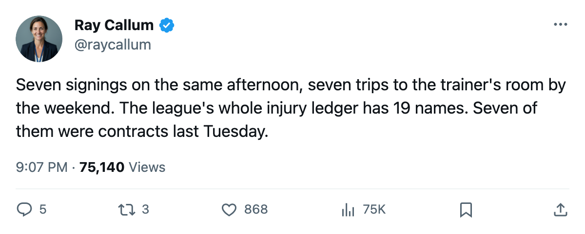
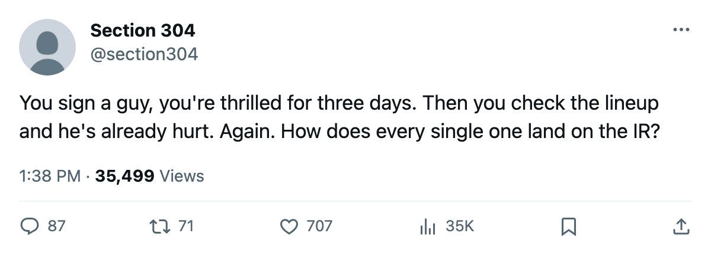

Roster Move Roundup: Every October 17 Signing Is Injured, and Pittsburgh's Man Is Out Until January
Seven clubs filed signings. All seven new men went down within 5 days
 Ray CallumSenior correspondent · Home Ice Network
Ray CallumSenior correspondent · Home Ice NetworkSeven clubs filed free-agent signings on October 17. All seven players landed on the injured list within 5 days. The league assigned every one of them an onset window between October 20 and October 22.
The longest absence belongs to Rico Fata70.  Pittsburgh Penguins signed him for $163,730. Abdomen designation, return date January 12, 2006. Fata's Penguins are 5-1-0 with a 4-game win streak and sit 3rd in the Eastern Conference, but losing a bottom-six forward for 3 months thins a lineup that plays 4 lines.
Pittsburgh Penguins signed him for $163,730. Abdomen designation, return date January 12, 2006. Fata's Penguins are 5-1-0 with a 4-game win streak and sit 3rd in the Eastern Conference, but losing a bottom-six forward for 3 months thins a lineup that plays 4 lines.
 Chicago Blackhawks brought in Deron Quint75 at $149,950. The defenseman is out with a groin through November 24. Chicago sits 1-2-1, last in the Central Division with 3 points, a 3-game losing streak, and a 0-3 home record.
Chicago Blackhawks brought in Deron Quint75 at $149,950. The defenseman is out with a groin through November 24. Chicago sits 1-2-1, last in the Central Division with 3 points, a 3-game losing streak, and a 0-3 home record.
 Minnesota Wild signed
Minnesota Wild signed  Bill Muckalt75 for $270,660. Hand, out through November 19. Minnesota has logged 5 injury spells this season and sits 1-3-0.
Bill Muckalt75 for $270,660. Hand, out through November 19. Minnesota has logged 5 injury spells this season and sits 1-3-0.
 Los Angeles Kings signed
Los Angeles Kings signed  Ian Laperriere70 for $640,260, the largest contract in the group. The concussion designation keeps him out through November 13. The Kings are 1-1-2 and have dropped 3 straight.
Ian Laperriere70 for $640,260, the largest contract in the group. The concussion designation keeps him out through November 13. The Kings are 1-1-2 and have dropped 3 straight.
 Colorado Avalanche signed Charlie Stephens74 for $557,420. Elbow, targeted for October 25. Colorado is 2-1-1 with 7 points, 5th in the West.
Colorado Avalanche signed Charlie Stephens74 for $557,420. Elbow, targeted for October 25. Colorado is 2-1-1 with 7 points, 5th in the West.
Two return tomorrow.  Atlanta Thrashers signed Steve Brule65 for $424,320; ankle, out through October 23. Atlanta hosts
Atlanta Thrashers signed Steve Brule65 for $424,320; ankle, out through October 23. Atlanta hosts  New Jersey Devils on October 23, so Brule could dress on his return date.
New Jersey Devils on October 23, so Brule could dress on his return date.  Dallas Stars signed
Dallas Stars signed  Philippe Boucher75 for $382,400, also through October 23. Dallas plays at
Philippe Boucher75 for $382,400, also through October 23. Dallas plays at  Calgary Flames on October 24, the day after his return.
Calgary Flames on October 24, the day after his return.
The league's injury ledger carries 19 active designations right now. Seven of them trace to contracts filed on October 17.

